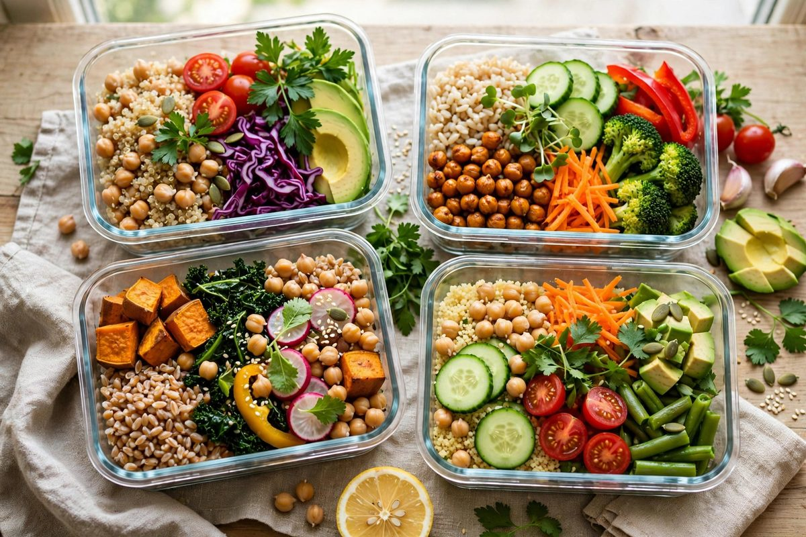

Home » Guides
Vegan Meal Prep

Meal prep makes vegan eating easy on busy weeks. One cooking session can produce lunches, dinners, and snacks for days, so you never have to decide what to eat when you are tired and hungry. This guide covers the system, the best foods to prep, storage, and a sample week you can copy.
The meal prep system
Choose three or four main dishes that reheat well: a soup, a curry, a grain bowl base, and a pasta sauce, for example. Cook a big pot of grains such as rice or quinoa, roast a tray of vegetables, and prepare a protein such as baked tofu or a pot of lentils. Store everything in separate containers so you can mix and match through the week. A good formula for each lunch or dinner box is a grain, a protein, two vegetables, and a sauce. Write the plan on paper before you shop, and keep the menu short enough that cooking takes under two hours.
Best foods to prep
Grains like rice, quinoa, and couscous keep for four to five days in the fridge and freeze well. Lentils, chickpeas, and beans hold their texture and improve in flavour after a day. Roasted vegetables such as sweet potato, carrots, and broccoli reheat nicely, while salads are best kept undressed until serving. Tofu and tempeh keep for four days once cooked. Sauces are your best friend: tahini dressing, peanut sauce, and tomato sauce all keep for a week and turn plain grains and vegetables into a proper meal. Soups and stews often taste better on day two.
Storage and food safety
Cool food quickly, within two hours of cooking, and store it in airtight containers. Cooked grains, beans, and roasted vegetables keep for three to five days in the fridge; freeze anything you will not eat by then. Keep dressings and sauces separate so salads stay crisp. Label every container with the contents and the date, and eat the oldest food first. Reheat meals until steaming hot throughout, and do not reheat the same portion twice. Wash your containers and your hands before handling food, and keep raw and cooked foods apart.
A sample prep week
A practical week might look like this: a pot of lentil soup, a chickpea curry with rice, a tray of roasted vegetables with quinoa, and a batch of baked tofu. Breakfasts are overnight oats in jars, and snacks are hummus with vegetable sticks and a handful of nuts. Each evening, assemble tomorrow's lunch box in two minutes from the containers. Total cooking time is about two hours on Sunday, and the rest of the week you only wash up and reheat. Once the habit is set, eating well becomes the default rather than the exception.
Meal prep for one person
Meal prep for one person is simpler than for a family, but it needs a different approach. Cook in smaller batches — a pot of soup that makes four portions, not eight — and freeze the extra portions individually, so you can defrost one at a time. Use the same base in different meals: a pot of lentils becomes soup on Monday, a curry on Wednesday, and a salad on Friday. Keep your freezer organised with labels and dates, and eat the oldest portions first. A single person can prep a whole week of lunches in one hour on Sunday, and the rest of the week is just reheating. The time you save is yours to spend on anything else.
Frequently Asked Questions
How long does prepped vegan food last?
Most cooked vegan meals keep for three to five days in the fridge. Freeze portions you will not eat within that time and defrost them overnight.
What containers should I use?
Glass containers with airtight lids are best. Use separate small pots for dressings and sauces so salads stay fresh.
Can I prep salads for the whole week?
Yes, if you keep the dressing separate and use sturdy vegetables like carrots, cabbage, and kale. Leafy salads are best made two days ahead at most.